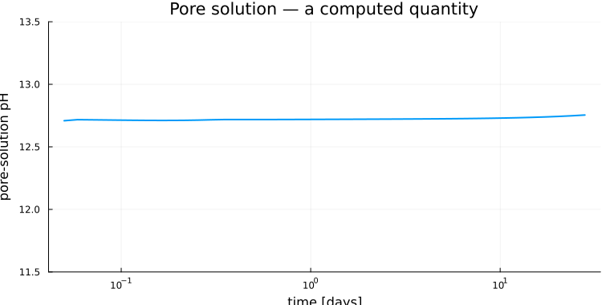
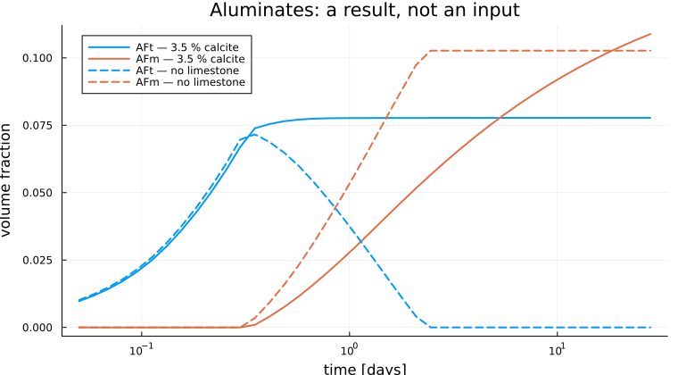
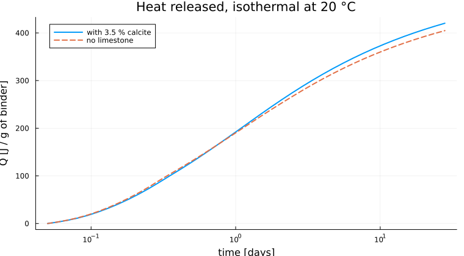
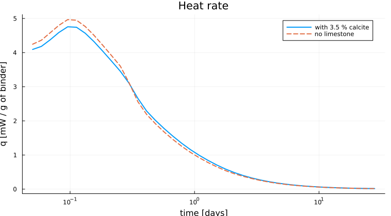
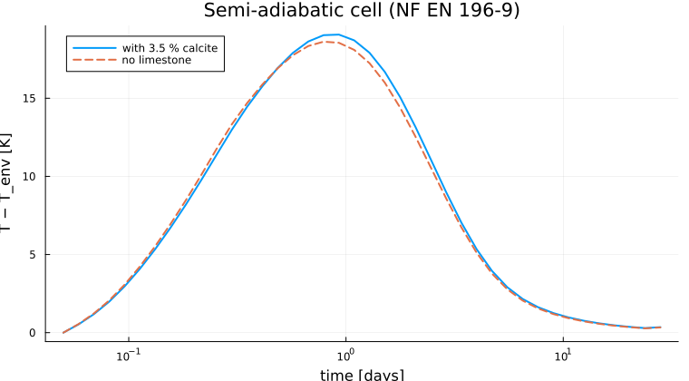

The full Portland cement, through its pore solution
The hydrating paste, end to end runs the two silicate clinker phases this way: prescribe the dissolution, let the thermodynamics decide the hydrates. This page does the same for a complete CEM I — alite, belite, aluminate, ferrite, gypsum and limestone filler — and then reads its calorimetry off the result.
The aluminates are what make the difference. A stoichiometric model has to state, in advance and by hand, that the aluminate goes to ettringite while sulfate lasts, then to monocarboaluminate if carbonate is available, then to monosulphate, then to hydrogarnet. Here none of that is written anywhere. The clinker only dissolves, into Ca²⁺, SiO₂, AlO₂⁻, FeO₂⁻, SO₄²⁻, CO₃²⁻ and H⁺, and a Gibbs minimization at every accepted step decides what is stable. §4 runs the same paste twice, with and without limestone, and gets two different aluminate histories out of one model.
The model lives in scripts/ionic_hydration.jl, which this page includes, so the page and the script cannot drift apart.
speciated_states passes each instant to DualEquilibriumSolver, which solves the KKT system and returns a certificate. The Gibbs problem is convex — an ideal mixing entropy plus terms linear in the amounts of the pure phases, over a polyhedron — so stationarity of the interior species, the component balance, and undersaturation of every absent phase together prove global optimality. All forty instants below are certified, with element balances between 1e-15 and 1e-11 mol.
The interior-point solve alone would not support that claim: on this package's own calcite reference it returns pH 6.96 against a certified 9.90, and it rarely reports convergence at all, so its return code cannot tell the two cases apart.
1. The system and the dissolution reactions
using ChemistryLab, DynamicQuantities, OptimaSolver, OrdinaryDiffEq
using OrderedCollections, Printf, Plots
gr()
include(joinpath(pkgdir(ChemistryLab), "scripts", "ionic_hydration.jl"))
cs = build_ionic_system(:opc)
@printf "%d species: %d aqueous, %d crystalline\n" length(cs.species) count(
s -> aggregate_state(s) == AS_AQUEOUS, cs.species
) count(s -> aggregate_state(s) == AS_CRYSTAL, cs.species)┌─────────────────────────────────────────────────────────────────────────────────────────────────────┐
│ Loading database: /home/runner/work/ChemistryLab.jl/ChemistryLab.jl/data/cemdata18-thermofun.json │
└─────────────────────────────────────────────────────────────────────────────────────────────────────┘
┌────────────────────┐
│ Building species │
└────────────────────┘
Progress: 53%|████████████████████████████████████████████████████████████████████████████████████▊ | ETA: 0:00:00
Progress: 89%|████████████████████████████████████████████████████████████████████████████████████████████████████████████████████████████████████████████████ | ETA: 0:00:00
Progress: 100%|█████████████████████████████████████████████████████████████████████████████████████████████████████████████████████████████████████████████████████████████████| Time: 0:00:00
62 species: 49 aqueous, 13 crystallineThe dissolution reactions are balanced by ChemistryLab from the phase and the primaries, and come out in the expected acid-driven form:
for r in ionic_reactions(cs; wb = 0.5, blaine = 380.0u"m^2/kg")[1:3]
println(" ", r.reaction)
end (CaO)₃SiO₂ = 3H₂O@ + 3Ca²⁺ + SiO₂@ + (-6)H⁺
(CaO)₂SiO₂ = 2H₂O@ + 2Ca²⁺ + SiO₂@ + (-4)H⁺
(CaO)₃Al₂O₃ = 2H₂O@ + 3Ca²⁺ + 2AlO₂⁻ + (-4)H⁺Note the negative H⁺ coefficients: dissolving alite consumes six protons per mole, which is what drives the pore solution to pH 12.5 and above.
2. Running the coupling
The formulation is the CEM I 52.5 N of (Lavergne et al., 2018), Table 9: Bogue composition C₃S 65 / C₂S 11 / C₃A 11 / C₄AF 8, gypsum 4.6 %, calcite 3.5 %, Blaine 380 m²/kg, w/b = 0.50, one kilogram of binder so every extensive result is per kilogram.
CLINKER = (C3S = 0.65, C2S = 0.11, C3A = 0.11, C4AF = 0.08)
TEND = 28 * 86400.0
TIMES = 10 .^ range(log10(0.05 * 86400), log10(TEND); length = 40)
run_cal = run_ionic_hydration(;
wb = 0.5, clinker = CLINKER, gypsum = 0.046, filler = 0.035, tend = TEND,
)
@printf "%d accepted steps, retcode = %s\n" length(run_cal.sol.t) run_cal.sol.retcode┌─────────────────────────────────────────────────────────────────────────────────────────────────────┐
│ Loading database: /home/runner/work/ChemistryLab.jl/ChemistryLab.jl/data/cemdata18-thermofun.json │
└─────────────────────────────────────────────────────────────────────────────────────────────────────┘
┌────────────────────┐
│ Building species │
└────────────────────┘
Progress: 52%|███████████████████████████████████████████████████████████████████████████████████▍ | ETA: 0:00:00
Progress: 89%|███████████████████████████████████████████████████████████████████████████████████████████████████████████████████████████████████████████████▍ | ETA: 0:00:00
Progress: 100%|█████████████████████████████████████████████████████████████████████████████████████████████████████████████████████████████████████████████████████████████████| Time: 0:00:00
┌ Warning: Using arrays or dicts to store parameters of different types can hurt performance.
│ Consider using tuples instead.
└ @ SciMLBase ~/.julia/packages/SciMLBase/76YQ3/src/performance_warnings.jl:32
┌ Warning: equilibrium solve returned `MaxIters`; the composition may not be an equilibrium. Set `ChemistryLab.STRICT_CONVERGENCE[] = true` to raise instead.
└ @ ChemistryLab ~/work/ChemistryLab.jl/ChemistryLab.jl/src/equilibrium/equilibrium_solver.jl:329
┌ Warning: 242 equilibrium solve(s) stopped short of the optimizer's tolerance and were used anyway. Judge them on the element balance, not on the retcode: worst |Aₑn − bₑ|∞ over the run was 9.39e-6 mol ON THE ACCEPTED STEPS, i.e. on the trajectory itself; 9.39e-6 mol counting also the Jacobian probes and rejected steps, which never enter the solution. Read the first figure: 1e-10 mol is machine precision whatever the system, while 1e-2 mol against a 0.3 mol sulfate budget is not. How much it matters depends on the RATE LAWS: `bₑ` is integrated from the rates alone, so a law that reads only its own degree of reaction (Parrot-Killoh, Waller) gives a trajectory independent of the speciation, and this figure then bears on the reported composition only — recover that with `speciated_states`, which certifies each instant against the KKT conditions. A law reading log-activities (a saturation ratio) does feed the speciation back into the trajectory, and there this figure is a direct measure of the error. Do NOT simply loosen the optimizer tolerance — on the calcite reference case that degrades the speciation from 4 % to 250 % against Reaktoro.
└ @ KineticsOrdinaryDiffEqExt ~/work/ChemistryLab.jl/ChemistryLab.jl/ext/KineticsOrdinaryDiffEqExt.jl:144
200 accepted steps, retcode = SuccessOne Gibbs minimization per accepted step, so this is the expensive part of the page. The activity model is HKFActivityModel on both halves of the coupling: a cement pore solution sits at I ≈ 0.1–0.7 mol/kg, where a dilute model is not defensible.
3. The pore solution
Certifying forty instants is the dominant cost of the whole page, and the calorimetry of §5 needs the very same compositions, so the replay is done once here and handed on.
states_c = speciated_states(run_cal.sol, run_cal.kp; times = TIMES)
times, fracs, pore_pH, poro = ionic_phase_history(run_cal, TIMES; states = states_c)
p_pH = plot(
times ./ 86400, pore_pH; xscale = :log10, lw = 2, legend = false,
xlabel = "time [days]", ylabel = "pore-solution pH",
title = "Pore solution — a computed quantity",
ylims = (11.5, 13.5), size = (760, 380),
)
The solution holds at pH 12.7 throughout, which is where a Portland cement pore solution belongs. Nothing in the input fixes it.
Each speciation warm-starts from the previous one, and the guess is first clipped to the element budget and projected back into {Aₑn = bₑ, n ≥ 0}. Both matter: the warm start is the equilibrium of the previous bₑ, so once the sulfate is spent it demands more of it than now exists, and the interior-point solve would start outside its own feasible set. Solved instead from a cold guess, the map returns no hydrates at all and a pore solution at pH 6, while the run itself computed 2.2 mol of C-S-H.
speciated_states also walks the chain up to the first instant requested, through a few earlier times whose compositions are discarded. That instant has no predecessor of its own, and without the run-up its interior-point answer held 56 interior species where the answer has 25 — every candidate hydrate present, four of them at 1e-5 to 1e-6 mol — which no certifying Newton recovers from, since it inherits the start.
4. The aluminate sequence, and how to deplete the ettringite
The same paste, run a second time with the limestone removed and nothing else changed.
run_nol = run_ionic_hydration(;
wb = 0.5, clinker = CLINKER, gypsum = 0.046, filler = 0.0, tend = TEND,
)
states_n = speciated_states(run_nol.sol, run_nol.kp; times = TIMES)
_, fracs_nl, _, _ = ionic_phase_history(run_nol, TIMES; states = states_n)
td = times ./ 86400
p_seq = plot(;
xscale = :log10, xlabel = "time [days]", ylabel = "volume fraction",
title = "Aluminates: a result, not an input", legend = :topleft, size = (760, 420),
)
plot!(p_seq, td, [get(f, "AFt", 0.0) for f in fracs]; lw = 2, color = 1, label = "AFt — 3.5 % calcite")
plot!(p_seq, td, [get(f, "AFm", 0.0) for f in fracs]; lw = 2, color = 2, label = "AFm — 3.5 % calcite")
plot!(p_seq, td, [get(f, "AFt", 0.0) for f in fracs_nl]; lw = 2, ls = :dash, color = 1, label = "AFt — no limestone")
plot!(p_seq, td, [get(f, "AFm", 0.0) for f in fracs_nl]; lw = 2, ls = :dash, color = 2, label = "AFm — no limestone")
for (lbl, f) in ("with 3.5 % calcite" => fracs, "no limestone" => fracs_nl)
aft = [get(fi, "AFt", 0.0) for fi in f]
j = argmax(aft)
@printf "%-20s AFt peak %.4f at %5.2f d AFt(28 d) %.4f AFm(28 d) %.4f\n" lbl aft[j] (
times[j] / 86400
) aft[end] get(f[end], "AFm", 0.0)
endwith 3.5 % calcite AFt peak 0.0778 at 28.00 d AFt(28 d) 0.0778 AFm(28 d) 0.1088
no limestone AFt peak 0.0716 at 0.35 d AFt(28 d) 0.0000 AFm(28 d) 0.1027Two histories out of one model:
- With limestone the ettringite forms and survives to 28 days. The carbonate reacts with the aluminate to form monocarboaluminate, so the sulfate is never called upon to feed an AFm and the AFt is stabilized. This is the well-known limestone effect.
- Without limestone the ettringite peaks within hours and is then depleted, reaching zero by 28 days. Once the gypsum is exhausted the AFt is the only sulfate reservoir left, and the remaining aluminate converts it to monosulphate.
Nothing in the code distinguishes the two cases. The free energy does.
5. Calorimetry
What is computed, and why it is not the heat of the reactions
The heat comes from the enthalpy of the whole system, Eqs. (17)–(21) of (Lavergne et al., 2018): for a quasi-static isobaric process the released heat balances the change of enthalpy, and the enthalpy is a sum over species of molar enthalpies of formation,
\[-\delta Q \;=\; \mathrm{d}H \;=\; \Bigl(\sum_i n_i\,C^\circ_{p,i}(T)\Bigr)\mathrm{d}T \;+\; \sum_i \Delta_f H_i(P,T)\,\mathrm{d}n_i , \qquad \Delta_f H_i(P,T) = \Delta_f H_i(P,T_0) + \int_{T_0}^{T}\!C^\circ_{p,i}\,\mathrm{d}\theta .\]
At fixed temperature this collapses to Q(t) = H(t₀) − H(t). Enthalpy is a state function, so reactants, ions and hydrates are each counted once and no reaction stoichiometry has to be written down — which matters here, because the hydrates are not produced by any reaction the model declares.
That is the whole difficulty of doing calorimetry on this model, and it is worth stating plainly. heat_rate sums rᵢ(−Δ_r H⁰ᵢ) over the kinetic reactions, which is right for a stoichiometric model whose reactions produce the hydrates directly. Here the kinetic reactions only dissolve the clinker into ions; the hydrates are precipitated by the Gibbs minimization, whose heat that sum cannot see. Driving a semi-adiabatic cell from it put the temperature rise at 207 K.
Nor can the enthalpy be read from the composition the integrator carries: under partial equilibrium that composition comes from an in-run, warm-started minimization which is not certified, and a single hydrate is worth hundreds of kilojoules. Read that way the curve came out at 12.7, 145, 1174, 936 and 631 J/g at 1 h, 6 h, 12 h, 1 d and 2 d — heat that rises and then falls, which no calorimeter has ever measured. heat_release therefore reads the certified speciations of §3.
t_cal, Q_c, qd_c = heat_release(run_cal.sol, run_cal.kp; times = TIMES, states = states_c)
_, Q_n, qd_n = heat_release(run_nol.sol, run_nol.kp; times = TIMES, states = states_n)
BINDER_G = 1000.0 # the runs simulate 1 kg of binder
@printf "monotone: with limestone %s, without %s\n" all(diff(Q_c) .>= -1.0e-9) all(
diff(Q_n) .>= -1.0e-9
)┌ Warning: equilibrium solve returned `MaxIters`; the composition may not be an equilibrium. Set `ChemistryLab.STRICT_CONVERGENCE[] = true` to raise instead.
└ @ ChemistryLab ~/work/ChemistryLab.jl/ChemistryLab.jl/src/equilibrium/equilibrium_solver.jl:329
┌ Warning: the dual equilibrium solve did not certify optimality; audit it with `optimality_certificate`.
└ @ ChemistryLab ~/work/ChemistryLab.jl/ChemistryLab.jl/src/equilibrium/dual_solver.jl:178
┌ Warning: 1 of 40 replayed instants could not be certified optimal and fall back to the interior-point composition, at t = [4320.0] s. Audit them with `optimality_certificate`.
└ @ ChemistryLab ~/work/ChemistryLab.jl/ChemistryLab.jl/src/kinetics/kinetics_postprocessing.jl:554
┌ Warning: equilibrium solve returned `MaxIters`; the composition may not be an equilibrium. Set `ChemistryLab.STRICT_CONVERGENCE[] = true` to raise instead.
└ @ ChemistryLab ~/work/ChemistryLab.jl/ChemistryLab.jl/src/equilibrium/equilibrium_solver.jl:329
┌ Warning: the dual equilibrium solve did not certify optimality; audit it with `optimality_certificate`.
└ @ ChemistryLab ~/work/ChemistryLab.jl/ChemistryLab.jl/src/equilibrium/dual_solver.jl:178
┌ Warning: 1 of 40 replayed instants could not be certified optimal and fall back to the interior-point composition, at t = [4320.0] s. Audit them with `optimality_certificate`.
└ @ ChemistryLab ~/work/ChemistryLab.jl/ChemistryLab.jl/src/kinetics/kinetics_postprocessing.jl:554
monotone: with limestone true, without trueIsothermal calorimetry at 20 °C
p_Q = plot(;
xscale = :log10, xlabel = "time [days]", ylabel = "Q [J / g of binder]",
title = "Heat released, isothermal at 20 °C", legend = :topleft, size = (760, 420),
)
plot!(p_Q, t_cal ./ 86400, Q_c ./ BINDER_G; lw = 2, color = 1, label = "with 3.5 % calcite")
plot!(p_Q, t_cal ./ 86400, Q_n ./ BINDER_G; lw = 2, color = 2, ls = :dash, label = "no limestone")
p_q = plot(;
xscale = :log10, xlabel = "time [days]", ylabel = "q̇ [mW / g of binder]",
title = "Heat rate", legend = :topright, size = (760, 420),
)
plot!(p_q, t_cal ./ 86400, qd_c ./ BINDER_G .* 1000; lw = 2, color = 1, label = "with 3.5 % calcite")
plot!(p_q, t_cal ./ 86400, qd_n ./ BINDER_G .* 1000; lw = 2, color = 2, ls = :dash, label = "no limestone")
for (lbl, Q, qd) in (("with 3.5 % calcite", Q_c, qd_c), ("no limestone", Q_n, qd_n))
j = argmax(qd)
@printf "%-20s Q: %5.1f (1 d) %5.1f (7 d) %5.1f (28 d) J/g peak %.2f mW/g at %.2f h\n" lbl (
Q[argmin(abs.(t_cal .- 86400))] / BINDER_G
) (Q[argmin(abs.(t_cal .- 7 * 86400))] / BINDER_G) (Q[end] / BINDER_G) (
qd[j] / BINDER_G * 1000
) (t_cal[j] / 3600)
endwith 3.5 % calcite Q: 185.0 (1 d) 347.2 (7 d) 420.3 (28 d) J/g peak 4.76 mW/g at 2.30 h
no limestone Q: 183.7 (1 d) 335.5 (7 d) 404.8 (28 d) J/g peak 4.97 mW/g at 2.30 hThe 28-day figures, about 420 J/g with limestone against 405 J/g without, are the ordinary range for a CEM I. The limestone raises the heat slightly rather than diluting it, because the carbonate is not inert here: it converts the aluminate to monocarboaluminate and stabilizes the ettringite (§4), and both reactions are exothermic. Substituting more limestone would eventually reverse the sign of that effect, which is the trade the LC³ literature is about.
The semi-adiabatic cell
A Langavant test (NF EN 196-9) lets the heat raise the temperature of the sample against the losses of the vessel. (Lavergne et al., 2018) write the loss as their Eq. (23),
\[C_{\rm tot}(t)\,\frac{\mathrm{d}T}{\mathrm{d}t} \;=\; \dot q(t) \;-\; \varphi(T-T_{\rm env}), \qquad \varphi(\Delta T) \;=\; a\,\Delta T + b\,\Delta T^2 ,\]
and the numbers used below are theirs, for the plain-cement mix C100 of their Table 11 at w/b = 0.5:
| quantity | value | source |
|---|---|---|
| binder / dry sand / water | 371 g / 1113 g / 196 g | Table 11, C100 |
calorimeter vessel C_vessel | 380 J/K | §4.1 — see the note below |
| sand heat capacity | 812 J/K | Qtz of CEMDATA18, 0.73 J/(g·K) |
loss coefficient a | 75 J/(h·K) = 0.0208 W/K | Eq. (23), NF EN 196-9 calibration |
loss coefficient b | 0.260 J/(h·K²) = 7.22e-5 W/K² | Eq. (23) |
The sand takes no part in the chemistry; it is there, as the paper says, "to avoid large temperatures", and enters only through its heat capacity. The paste's own Σᵢ nᵢ C°_{p,i}(T) — about 900 J/K at 28 days — comes from the database at each instant, so it is not counted twice.
The paper prints "about 380 kJ/K", and that cannot be the figure its own results correspond to. Its Table 11 mix holds 371 g of binder releasing some 420 J/g, i.e. about 156 kJ; against 380 kJ/K the temperature would rise by 0.4 K, where the test reports tens of kelvin. The rest of the setup is consistent with joules — sand and water alone contribute roughly 1.6 kJ/K — so 380 J/K puts the total near 2.1 kJ/K and the adiabatic rise near 75 K, which is the order the measurements show. It is read as 380 J/K here, and this note is deliberate: the alternative is to change a published number in silence.
T_c = langavant_temperature(t_cal, qd_c ./ BINDER_G, states_c)
T_n = langavant_temperature(t_cal, qd_n ./ BINDER_G, states_n)
p_T = plot(;
xscale = :log10, xlabel = "time [days]", ylabel = "T − T_env [K]",
title = "Semi-adiabatic cell (NF EN 196-9)", legend = :topleft, size = (760, 420),
)
plot!(p_T, t_cal ./ 86400, T_c .- 293.15; lw = 2, color = 1, label = "with 3.5 % calcite")
plot!(p_T, t_cal ./ 86400, T_n .- 293.15; lw = 2, color = 2, ls = :dash, label = "no limestone")
m_binder_g = ustrip(us"kg", LAVERGNE_MIX_C100.binder) * 1000
C_fixed = LAVERGNE_VESSEL_CP + sand_heat_capacity(LAVERGNE_MIX_C100.sand)
for (lbl, T, Q, st) in (("with 3.5 % calcite", T_c, Q_c, states_c),
("no limestone", T_n, Q_n, states_n))
j = argmax(T)
C_tot = C_fixed + ustrip(us"J/K", heat_capacity(st[end])) * m_binder_g / 1000
@printf "%-20s ΔT max %.1f K at %.1f h adiabatic ΔT(28 d) %.1f K\n" lbl (
T[j] - 293.15
) (t_cal[j] / 3600) (Q[end] / BINDER_G * m_binder_g / C_tot)
endwith 3.5 % calcite ΔT max 19.1 K at 22.3 h adiabatic ΔT(28 d) 74.5 K
no limestone ΔT max 18.6 K at 18.9 h adiabatic ΔT(28 d) 71.4 KA rise of about 19 K at roughly one day, against an adiabatic 75 K: the sand and the losses absorb three quarters of the heat, which is what the test is designed to do.
The heat rate above was computed at 20 °C. The temperature reached in the cell accelerates the reactions — Parrot–Killoh carries activation energies of 42, 21, 54 and 32 kJ/mol for C₃S, C₂S, C₃A and C₄AF — and that feedback is not included, so the true peak comes earlier and higher. Closing the loop needs the heat source inside the ODE, which under partial equilibrium requires differentiating the equilibrium map; KineticsProblem refuses that combination with a warning rather than returning a number it cannot support. For a stoichiometric model, where the reactions do produce the hydrates, the fully coupled version is scripts/opc_semiadiabatic_calorimetry.jl.
6. Porosity, and what it is referred to
The porosity of a setting binder is not V_liquid / V_total: the denominator shrinks with the reactions, while a sealed specimen keeps the volume it was cast with, and the empty porosity left by the Le Chatelier contraction is not a species at all. ionic_phase_history returns the two-argument porosity, referred to the fresh paste and counting the chemical shrinkage as void.
@printf "%6s %8s %8s %8s\n" "t [d]" "φ" "S" "void"
for t in (0.25, 1.0, 3.0, 7.0, 28.0)
i = argmin(abs.(td .- t))
@printf "%6.2f %8.4f %8.4f %8.4f\n" td[i] poro[i].total (
poro[i].liquid / poro[i].total
) get(fracs[i], "void", 0.0)
end t [d] φ S void
0.25 0.5763 0.9357 0.0370
0.93 0.5067 0.9022 0.0496
2.89 0.4454 0.8689 0.0584
6.50 0.4090 0.8449 0.0634
28.00 0.3634 0.8082 0.0697A sealed paste desaturates as it hydrates though no water ever leaves it: the saturation falls from 0.94 to 0.81 while the chemical shrinkage grows to about 7 % of the fresh volume.
Where the mechanics goes
The volume fractions above are exactly what a micromechanical estimate of the elastic modulus needs. That extension — the same chemistry, feeding a four-scale self-consistent/Mori–Tanaka scheme, and the setting threshold that comes with it — is the chapter Hydration through the pore solution of MeanFieldHomogenization.jl, which duplicates the model of this page and adds the homogenization.